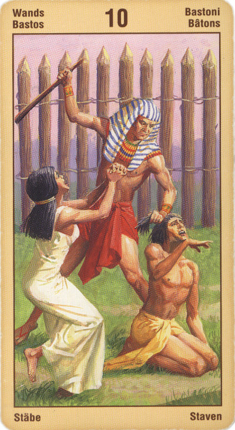

Десятка Жезлов
Значение: Эта карта означает человека, взявшего на себя слишком мно¬го - ответственность, которая ему не по силам, или обяза¬тельства, которых не в состоянии выполнить. Вместо то¬го, чтобы шагать дальше с этой ношей, ему нужно оста¬новиться, сбросить хотя бы часть ее и оглядеться: куда он зашел и стоит ли тащить весь этот груз дальше?
Эта карта часто выпадает бизнесменам или “трудоголикам”, работающим по 25 часов в сутки. Тогда она предупреждает, что человек немедленно должен дать себе отдых, иначе его ожидает расстройство здоровья или неудача во всех делах. Как прогноз, она означает, что за планируемое дело лучше не браться, потому что сейчас оно “неподъемно”.
Теперь вас окружают плоды приложенных усилий или успеха, однако вы не можете до конца расслабиться, потому что вам так много надо сделать. Например, проект, который вы инициировали, перерос в нечто большее или более сложное, чем вы первоначально ожидали.
Данная карта может сигнализировать об опасности переутомления или истощения либо о навязчивом стремлении к власти, к новым свершениям, к достижению определенного статуса или признания. Не исключено, что вам необходимо научиться доверять другим выполнение тех или иных задач, либо приступить к переоценке своих приоритетов и ценностей, с тем, чтобы определить, что же в вашей жизни самое главное.
Давайте повнимательнее приглядимся к той ситуации, которую описывает нам Десятка Посохов. Прежде всего, если в раскладе выпала эта карта, значит, в данный момент ваше сознание озабочено проблемами имущества и достатка. Или же, что тоже весьма вероятно, вас интересует исход какого-либо дела, зависящего от действий других людей.
В перевернутом виде указывает, что неудача уже произошла, человек “надорвался” и поплатился за это здоровьем или удачей.
Для вас существует возможность освободиться от груза бремени. Это может произойти из-за полного упадка сил из-за перенапряжения, в результате чего вы будете вынуждены пытаться разрешить сложившуюся ситуацию как-то иначе. Это также может случиться из-за того, что вы сознательно измените свое отношение и поведение, что поможет определить новые жизненные приоритеты и начать находить время не только для работы, но также для отдыха и праздника.
В перевернутом положении карта символизирует трудности, интриги, двуличие, предательство. Десятка жезлов в перевернутом положении может указывать на встречу с предателем ваших интересов, их разрушителем. Практически перевернутаядесятка жезлов всегда несет в себе те или иные потери.
Отрицательное значение: интриги, затруднения, судебные тяжбы. Предательство, крах. Камень на сердце. Злой умысел, должностное преступление.